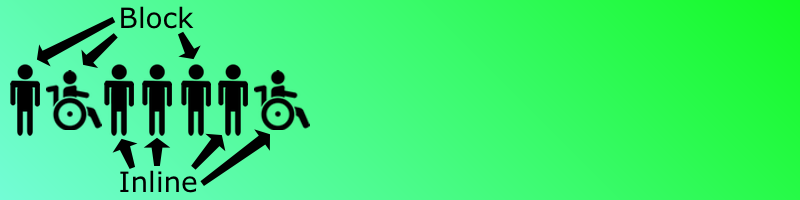
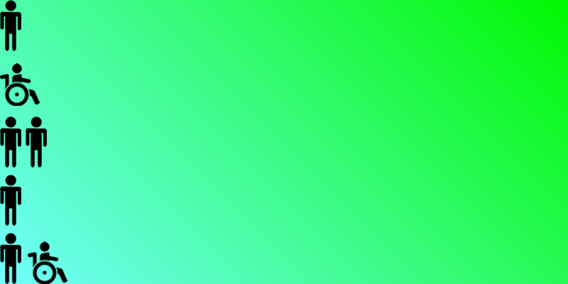

Make Your First Webpage | #commontags
60 minutes
Practice applying common HTML tags to see how they work on a webpage, learning code, compose, and remix.
Web Literacy Skills
21st Century Skills
Learning Objectives
- Understand and explain the importance of organization and structure to communication and media.
- Understand and apply common tags such as
<h1>,<p>,<img>,<em>,<strong>,<u>,<ol>and<ul>, and<li>. - Understand and explain HTML as a markup language for structuring a webpage.
- Use tags to structure and organize content on a webpage.
- Evaluate which common tag to use when according to the structure of a webpage and nature of its content.
Audience
- 13+
- Beginner web user
Materials
- Projected instructor computer
- Internet connected computers
- Thimble accounts
- Markers
- Paper
- Today's project
- Optional: Boring poster template
- Optional: Block & inline role cards
-
1. Preparation
Learning Progression
In this lesson, your learners will:
- Create new, well-structured and visually appealing posters based off the information in boring poster template.
- Use common HTML tags to remix this jumbled Thimble project and make it well-structured and more visually appealing.
- Reflect on their learning.
You should...
Try the offline and online activities before you teach the lesson. You can find the online activity here. Print out any materials you need for your learners.
-
2. Introduction
5 minutesWelcome your learners and introduce the lesson to them. Tailor your introduction to make sense for your audience as you explain block elements and inline ones.
Today we’re going to work with common HTML tags. These are the tags that people use to structure and organize information on a webpage. For example, people use
<head>and<body>tags to set up the two main sections of a webpage and tags like7lt;p>for paragraph to separate each block of text. Some of the tags we’ll use are block elements - parts of the page that get their own line or block of space like an image or paragraph.We’ll also look at inline tags which are tags that work inside block elements. For example, you might have a large block elment, like a paragraph, with italic words inside it. The italic passage is inline because it doesn't start a new line. Bold and underline text, and links, work in the same way.
Let’s try an offline activity to make the differences between block and inline elements clear.
-
3. Offline Activity
20 minutesUse the scripted bits in pink and steps below to help learners follow your instructions and learn about the differences between block and inline elements. Pause to answer questions, rephrase instructions, and improvise new explanations as needed.
Option 1: Boring Poster
Hand out copies of the boring poster template. (You can also project or post a single large copy, as well.) One one side, the template has a block of jumbled text that mixes up all kinds of information about an upcoming event. It also includes an image that doesn’t go with the event, either. You can customize your own version to make it relevant for your learners.
Let’s take a look at this mess of a poster. What do you think is wrong with it? How would you change it to make it clearer, more informative, or more exciting? Which parts should be like block elements - on their own lines - and which parts should be inline - or strung together?
Project or otherwise post a copy of this poster that learners can see from around the room. Have two colors of marker handy - one for identifying block elements and one for identifying inline elements. Circle or box each kind of element on the poster as learners label them through the conversation below.
For example, what do you think the title is for this poster? Should it be a block element - on its own line - or an inline element - strung together like it is now with the rest of the content?
Can you find another part of the poster that you think should be a block element on its own line?
Pause for volunteers' responses.
Nice job! Now, what about inline elements? Are there any chunks of this poster that are okay to string together in a paragraph?
Wait for responses.
Ask learners to use the blank side - or another piece of paper - to revise the poster and give it some structure and organization. They can sketch new images on their revised copies, as well.
Take your ideas about how to improve this poster and make a revised copy on the back of our handout. Pay attention to which parts you treat as block elements and which you treat as inline elements. This will help you revise the webpage we’ll look at later in today’s activity.
After about 10-15 minutes, invite volunteers to share their posters and to explain the changes they made. Facilitate a brief, 5-10 minute discussion about what they’ve learned so far. Ask them which parts they think are block elements and which are inline and ask the whole group if some elements of their posters always seem to be one or the other. Are there rules they can discover about those kinds of elements and the structure and organization of a document?
Option 2: Block & Inline Game
Your explanation and the first round of the game should take about 5 minutes.
This game asks learners to move around quite a bit, so be sure to clear an area big enough to let all your learners move comfortably. Also make it clear that learners can participate without moving by observing the game and joining the conversation afterwards or by partnering together. For example, one learner could direct another where to go.
Shuffle and then hand out Block & Inline Game cards to your learners. Each card should say “block” or “inline.” Ask your learners to keep their cards secret for now.
Then, ask learners to line up in a row. Explain that they’ll begin the game inline together. Here’s how that might look:

Next, ask them to look at their cards. They should all stay in order but change position based on whether their cards say block or inline. Learners with block cards should start new lines, and learners with inline cards should stay in a line attached to their closest peer with a block card.
After your learners move, here’s how their lines might look:

After the first round, have learners switch cards 3-5 times to randomize their positions. Play a few more rounds of the game. That should take 5-10 minutes. You can introduce an element of competition by challenging the whole-group to organize itself more quickly each time you play.
Finally, facilitate a brief, 5-minute conversation about the general rules for block and inline elements - how do they impact the structure and organization of a page? What’s most important to remember about each type of element? What are some examples of each type of element they’ve seen in other media like books or games?
-
4. Online Activity
20 minutesUse the scripted bits in pink and steps below to help learners follow your instructions and revise a poorly structured webpage with block and inline elements. Pause to answer questions, rephrase instructions, and improvise new explanations as needed.
You can take your learners into Thimble or work on paper if you’re in a lo-fi or no-fi setting without access to computers or the internet.
First, let’s visit today’s project in Thimble. Here is the URL.
Post an easily readable shortened link to today’s activity like http://bit.ly/2bEBmUg.
You can see that the page needs some work. It’s a mess. Let’s fix it. Hit Remix to go into Thimble.
Once you’re on the remix screen, sign in to Thimble. If you haven’t created an account yet, you need an email address to do so. Does anyone need help getting an account or signing in to Thimble?
Help learners create accounts, sign in, or use a class account.
Is everyone ready? Here we go.
Make sure your learners can all get to the project.
What do you think is wrong with this webpage?
Wait for several volunteers to respond.
How do you think we might fix it? Which parts seem like they should be block elements to you? Which parts seem like they could stay inline?
Listen for another several volunteered responses.
Excellent suggestions. Let’s work through the page together using some common HTML tags to give it better structure and organization for a viewer. We can use the tutorial tab to help us improve the page. Click on the tab and then follow the steps with me as we go.
Work through the tutorial with your learners. Pause at each step to explain the purpose of each tag you use and whether it’s block or inline. You can use explanations like these or develop your own:
<h1>- stands for heading, level 1; used for a big heading like a title; this is a block element<p>- stands for paragraph; begins and ends blocks of text; this is a block element<img>- stands for image; calls an image into your webpage from wherever it lives as a file; this is a block element<ol>- stands for ordered list; creates a numbered list; this is a block element<ul>- stands for unordered list; creates a bulleted list; this is a block element<li>- stands for list item; creates a new child item inside a parent list; this is a block element<a>- this is the tag for a link; creates a link to another page or file; this is an inline element<strong>- this is the tag for bold text; this is an inline element<em>- stands for emphasis; this is the tag for italic text; this is an inline element<u>- stands for underline; this is the tag for underlined text; this is an inline element
You can also share and reference this cheatsheet which is also linked to from the tutorial.
Once you’ve completed the tutorial with your learners, if you have time left, invite them to keep messing with the page to see what they can discover.
With the last 3-5 minutes of this step, ask learners to tell you what they notice about the page before and after its revision. How did applying block and inline elements improve is structure, organization, and readability?
-
5. Reflection and Assessment
5 minutesEnd the activity with a brief reflective discussion of how webpages are structured. You can collect and assess learners’ responses in other ways, as well, but be mindful to do so in ways that are fair to all of your learners and allow them each individually the greatest amount of expression possible.
- Why do people structure and organize media? Why don’t we treat all information the same way all the time?
- How do block elements provide structure on a webpage?
- How do inline elements help order or emphasize content on a webpage?
- What other elements do you think you might use on your own webpage? Would you predict that they are block or inline? Why?
- Where else in the world or in media can you see structure and organization at work? Can you explain and example for the group?
Questions? Comments? Suggestions for improvement? Email Chad Sansing, curriculum developer at the Mozilla Foundation.